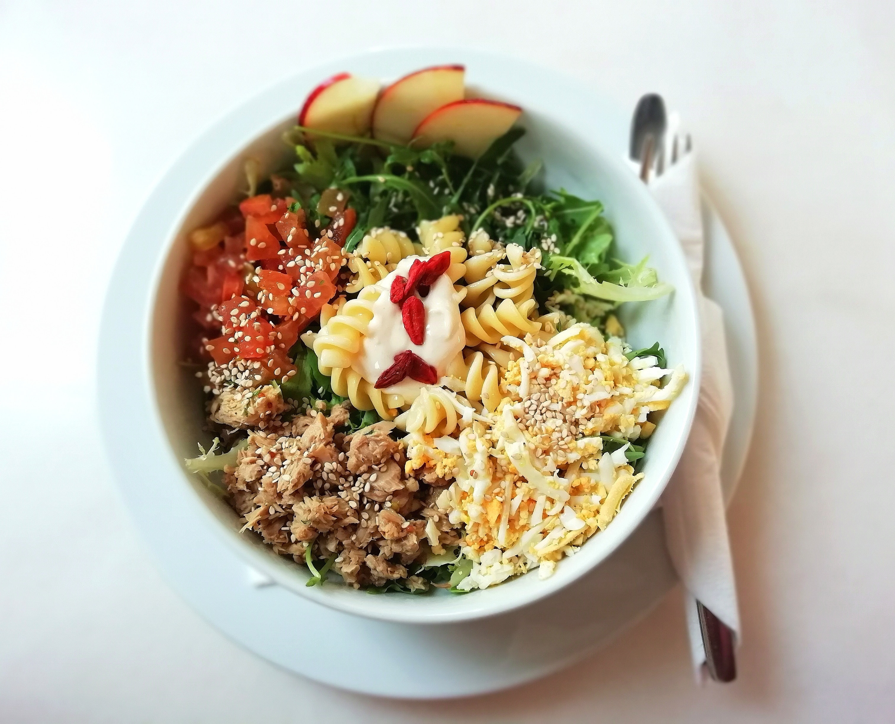

Pasta Salad

The exquisite pasta salad is culinary masterpiece. With succulent pepperoni, ripe
tomatoes, and creamy provolone cheese, it has earned its place as the ultimate dish. Its delightful
flavors have made it a crowd favourite, often requested for picnics and dinners. Easy to prepare
and light on the palate. It's the perfect addition to any gathering.
Ingredients
- 1 (16 ounce) package fusilli (spiral) pasta
- 3 cups cherry tomatoes, halved
- 1/2 pound provolone cheese, cubed
- 1/2 pound salami, cubed
- 1/4 pound sliced pepperoni, cut in half
- 1 large green bell pepper, cut into 1 inch pieces
- 1 (10 ounce) can black olives, drained
- 1 (4 ounce) jar pimentos, drained
- 1 (8 ounce) bottle Italian salad dressing
Instructions
- Gather all ingredients
- Bring a large pot of light salted water to a boil. Cook fusilli
in the boiling water, stirring occassionally, until tender yet firm to
the bite, about 12 minutes. Drain.
- Combine fusilli with tomatoes, cheese, salami, pepperoni, green pepper
, olives, and pimentos in a large bowl. Pour in salad dressing; toss to coat.
- enjoy